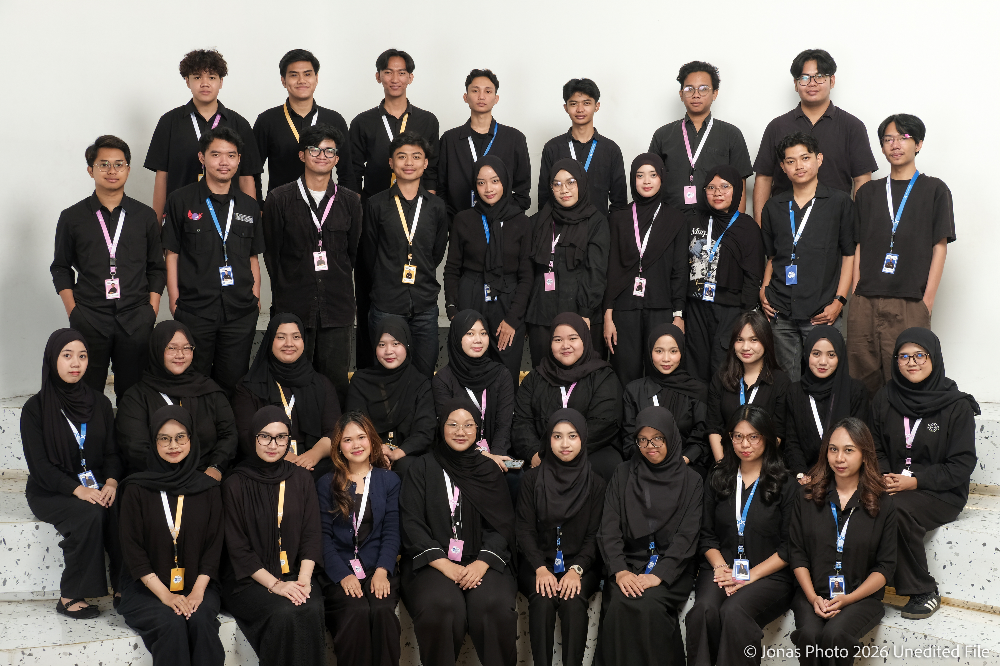
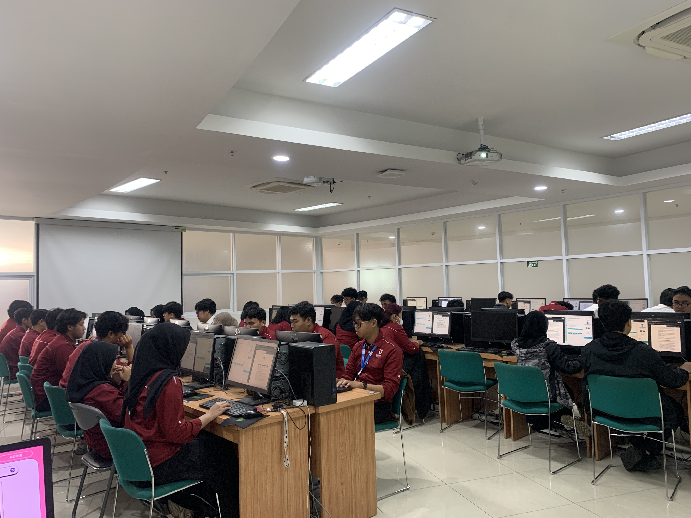
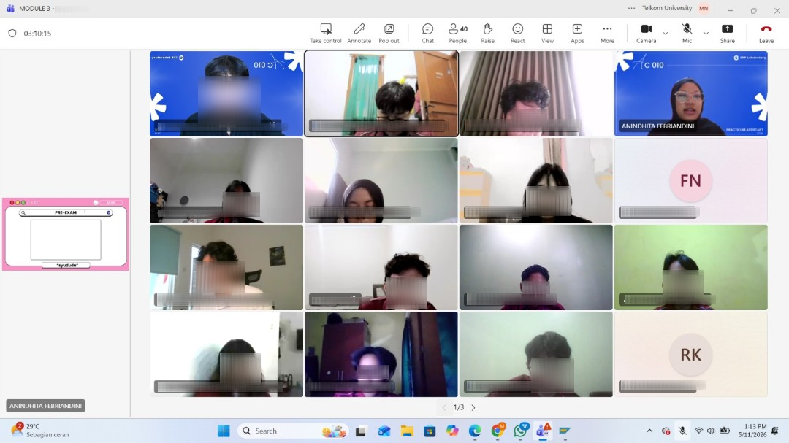

01 / ROLE OVERVIEW
Learning in the SAP Environment
During my five-month tenure as Practicum Coordinator for the SAP AC010 Accounting Information Systems practicum, I supported financial accounting learning activities and coordinated the laboratory assistant team to maintain consistent session delivery. My responsibilities included connecting accounting concepts with SAP-based exercises, supporting students during practical activities, and contributing to case-study development, assessment preparation, and troubleshooting guidance. The practicum covered General Ledger, Accounts Receivable, and Asset Accounting, reaching more than 400 students.
02 / RESPONSIBILITIES & CONTRIBUTIONS
What I Supported
Practicum Team Coordination
Coordinated the laboratory assistant team and supported the consistent delivery of SAP AC010 practicum sessions.
Financial Accounting Process Facilitation
Connected General Ledger, transaction-posting, and financial-reporting concepts with the corresponding SAP exercises.
Student Support & Troubleshooting
Assisted students in working through practicum exercises and identifying functional or system-configuration issues encountered during practice.
Case Study & Assessment Development
Supported the preparation and refinement of case studies, examination instruments, and troubleshooting guidance for practicum activities.
03 / SELECTED LEARNING ACTIVITIES
Explaining the Process
General Ledger Accounting
G/L account master data and company-code settings provide the accounting structure used in financial reporting.
Connected account attributes and company-code settings to the relevant SAP exercise, explaining their purpose in the wider accounting workflow.
Accounts Receivable
Customer master records and transaction documents support customer-related accounting activities.
Related customer-data maintenance and change tracking to the accounting documents used in the practicum.
Asset Accounting
Asset master data and acquisition postings support the recording and reporting of company assets.
Connected asset setup and acquisition exercises with the resulting asset values and reporting activities.
04 / MATERIALS AND ACADEMIC SUPPORT
Resources Behind the Practicum
These visual summaries describe learning and support resources. They are illustrative diagrams, not official system screenshots or claims of sole authorship.
General Ledger Accounting
Reference material connecting G/L account master data, company-code settings, and financial-reporting use.
ILLUSTRATIVE LEARNING AID · NOT AN OFFICIAL SYSTEM SCREENAccounts Receivable
Practice reference for customer master records, change tracking, and customer-related accounting transactions.
ILLUSTRATIVE LEARNING AID · NOT AN OFFICIAL SYSTEM SCREENAsset Accounting
Practice reference connecting asset master data, acquisition postings, and asset reporting.
ILLUSTRATIVE LEARNING AID · NOT AN OFFICIAL SYSTEM SCREENCase Study Support
A redacted assessment or case-study preview, only where publication is permitted and your contribution is clear.
ILLUSTRATIVE LEARNING AID · NOT AN OFFICIAL SYSTEM SCREEN05 / DOCUMENTATION
Snapshots from the Practicum
Authentic documentation supplied for this experience. Captions describe the visible activity without adding unverified outcomes.



SKILLS DEMONSTRATED